Ten concepts from one research brief, judged on four independent lenses. Every prototype is a single self-contained file. Open any one and use the control in the corner to switch theme, data state and day type.
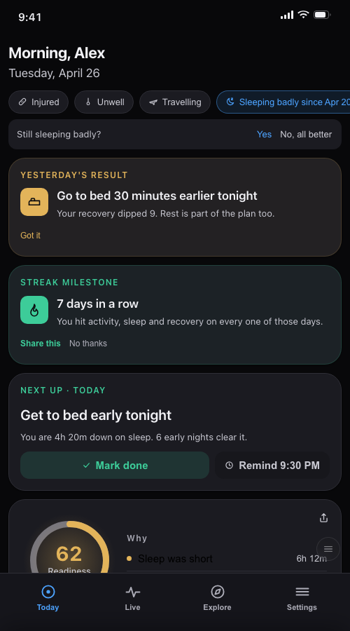
A working copy of the current screen, flaws included: 18 blocks, about 60 numbers, 51 tap targets, 18 ways out, four things all telling you what to do, and a change chip that describes a different number from the ring above it.
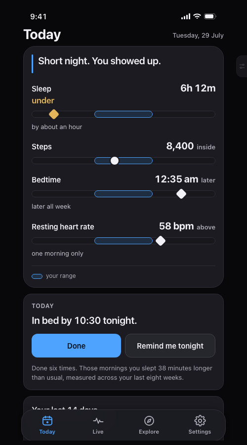
Four signals, each shown as a position inside your own range, each carrying its own plain verdict. One instruction. One proof line. No score anywhere. Degrades honestly to phone-only and to day three, and a warning takes the top slot without being hedged.
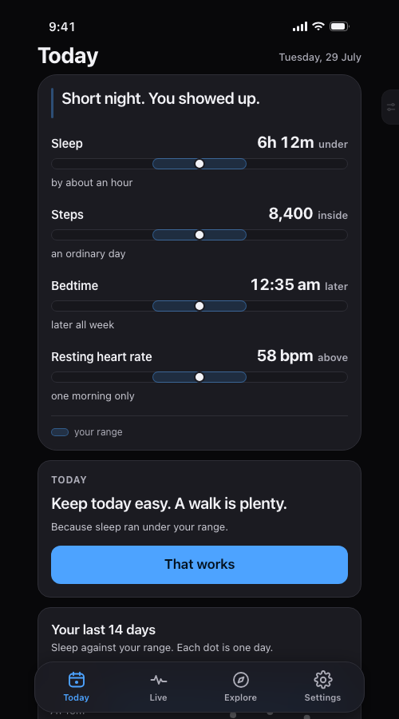
Every signal is a position inside your own range, drawn in a unit you already own — there is no score, no grade, and no way to fail this screen.
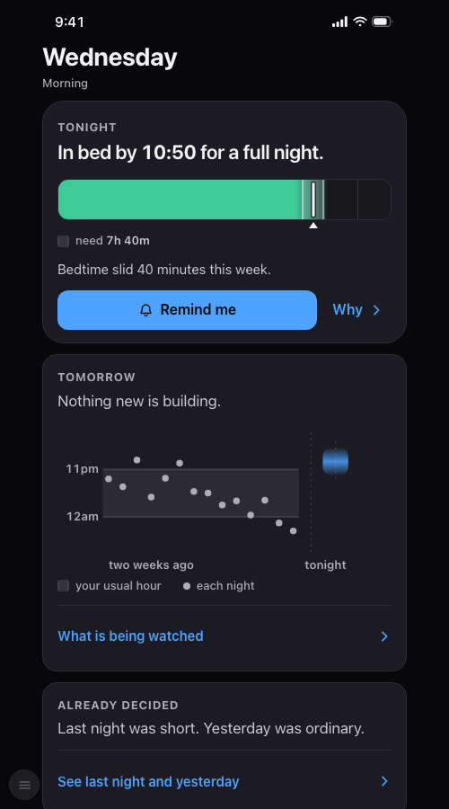
This morning is already decided, so the screen leads with tonight and tomorrow — the only part of your health you can still change while you are looking at it — and it never predicts, it states what is currently building and what you can still move.
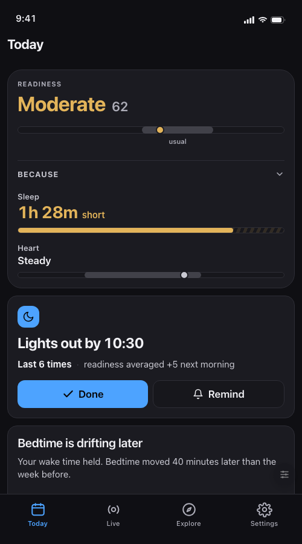
Every element on this screen is a causal statement, and the app shows its work in place, because the loudest complaint across four of six competitor recovery apps is "the score does not match how I feel and it will not tell me why."
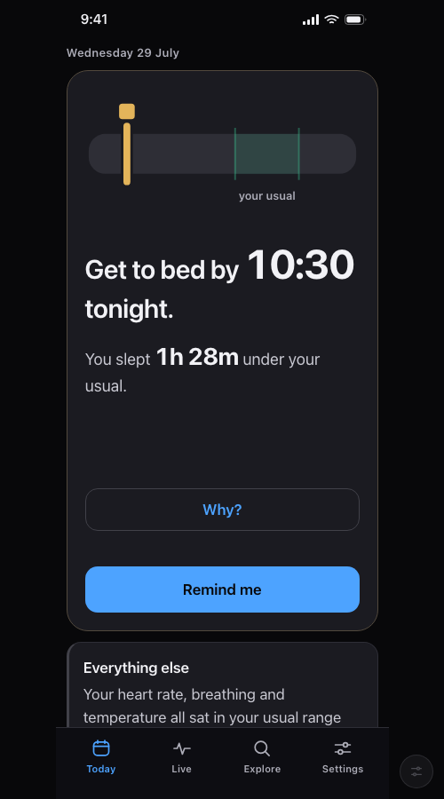
Someone has already read your data, has exactly one thing to say, and says it with your number set inside the sentence, so the verdict lands before you read a word and the reason is one tap away without leaving the screen.
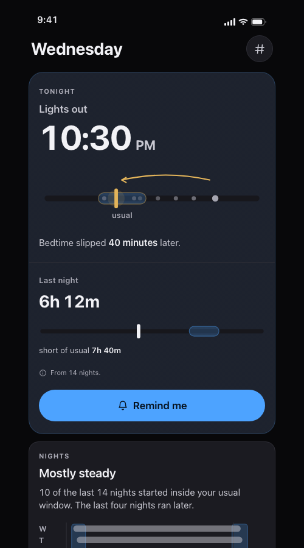
Sleep timing is the biggest lever most people actually own, so the screen shows two clock quantities — when to go to bed tonight, and how last night landed — and carries no score of any kind anywhere.
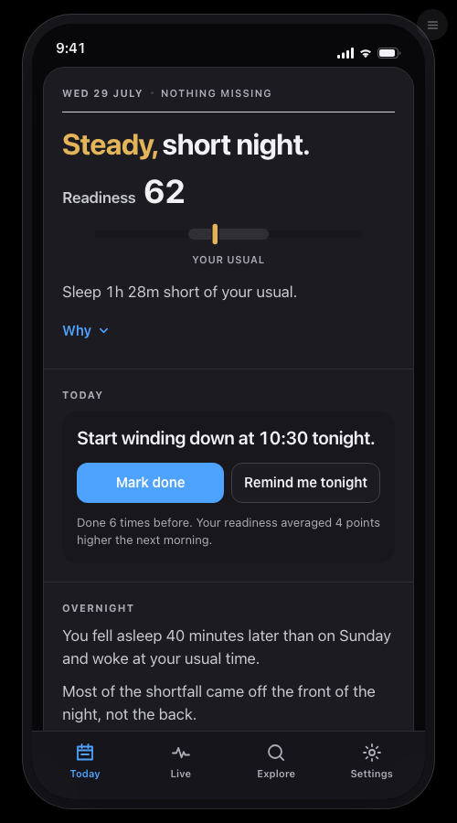
The app writes you a dated one-page dispatch while you sleep, and the Home Screen is that dispatch — a masthead, a headline verdict, the one thing to do, the story behind it, and a sign-off — visibly authored, visibly new every morning.
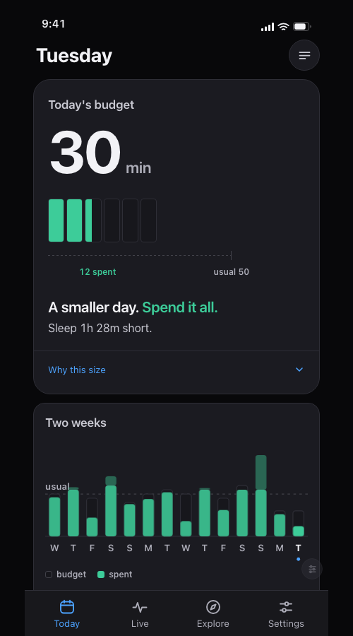
Today comes with an amount of effort you can afford to spend, and spending all of it is the good outcome — so the screen shows you the amount, in a unit you already own (minutes, or steps on an iPhone), and nothing else: there is no 0-100 score anywhere on this screen, not even behind a tap.
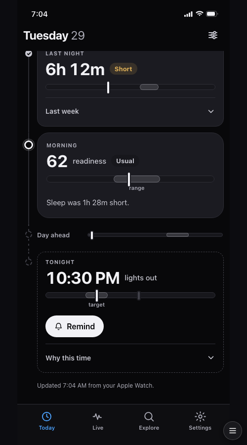
Home is not a dashboard of metrics, it is a single thread through the twenty-four hours around now — last night, this morning, the day ahead, tonight — where each moment carries one number and one meaning, and the thread always ends with the one thing to do tonight.
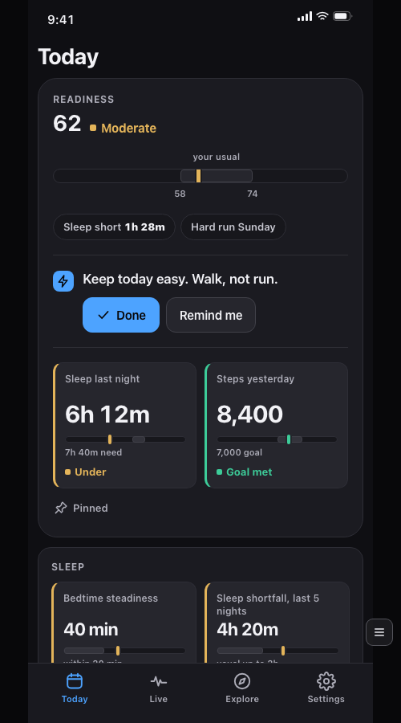
Density is not the enemy of calm, uninterpretable density is; so put the comparison and the plain-word verdict inside every single element, let colour carry the pre-attentive load, and lock the whole thing to one rigid grid so twenty-two numbers are scanned chromatically in one sweep instead of parsed one at a time.
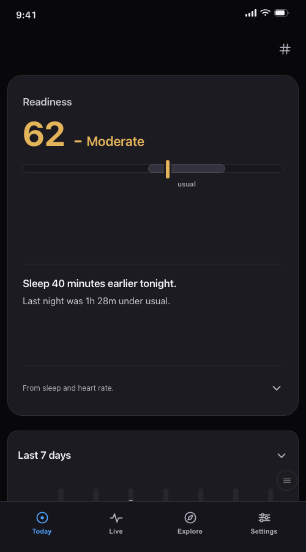
The screen answers one question with one number, one sentence and one cause, and then it ends — because the design goal is that the user closes the app satisfied in five seconds, not that they stay.